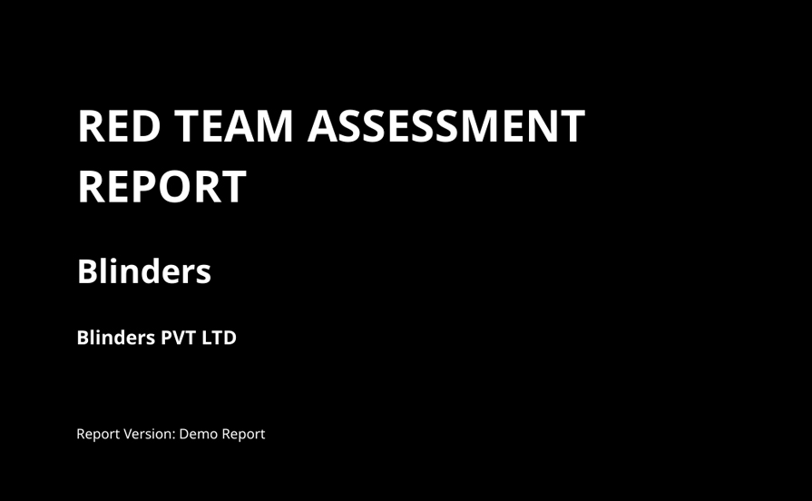
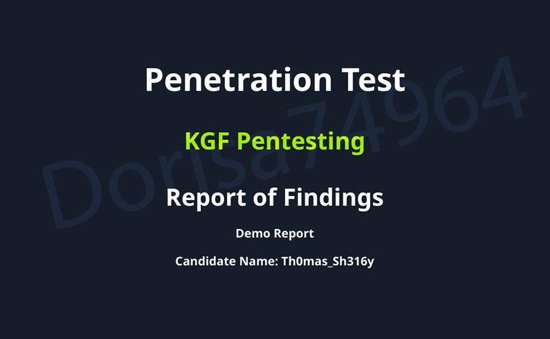
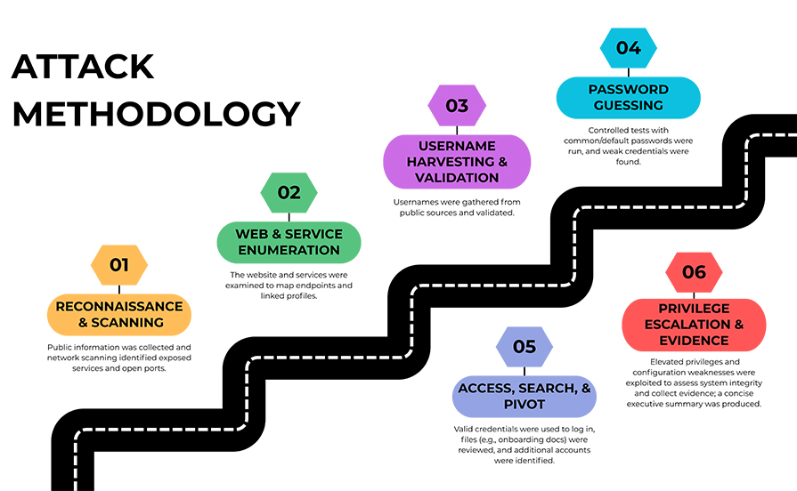
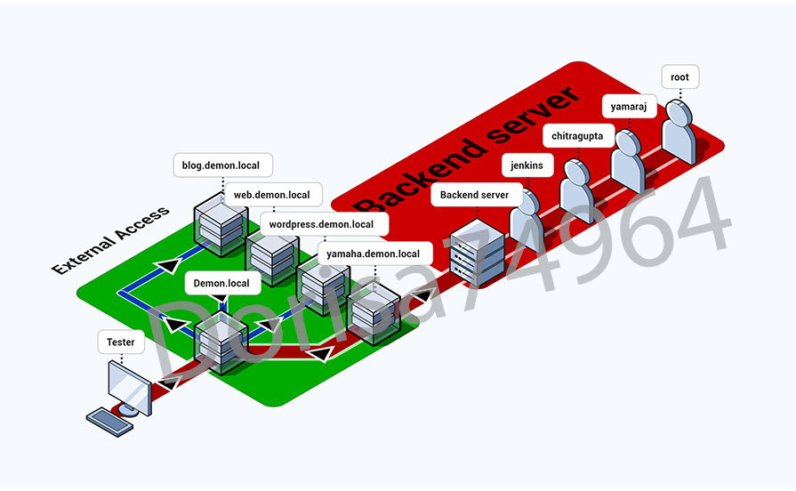
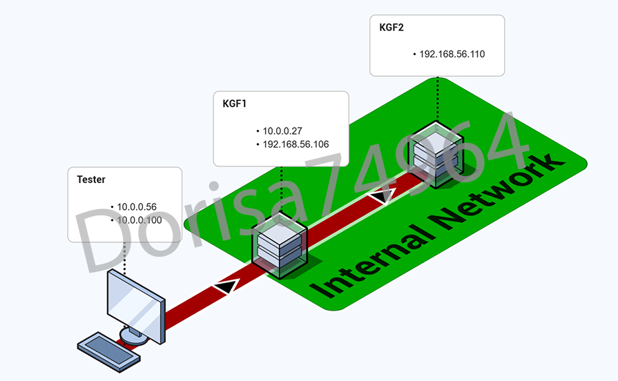
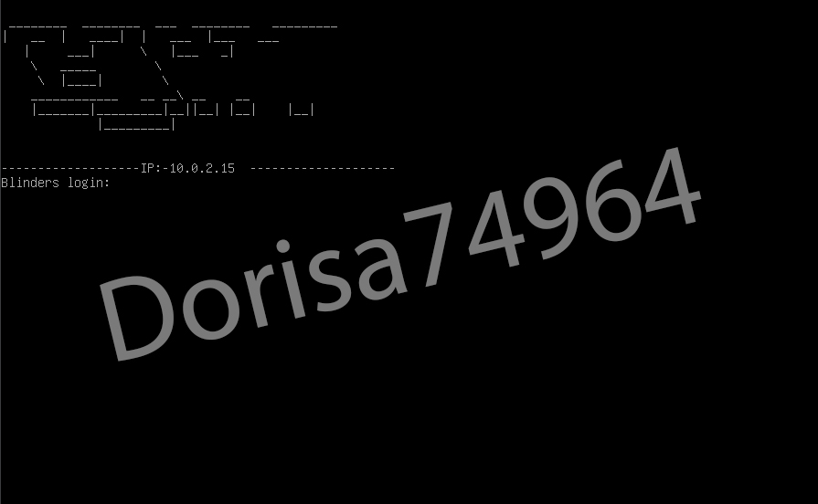
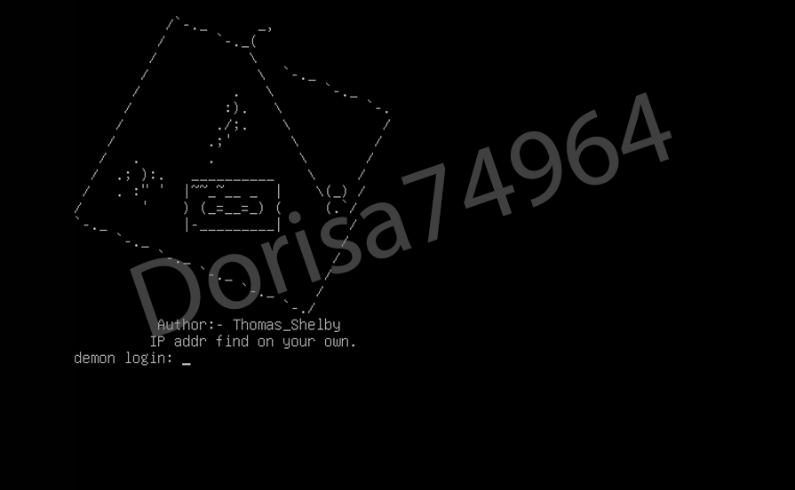
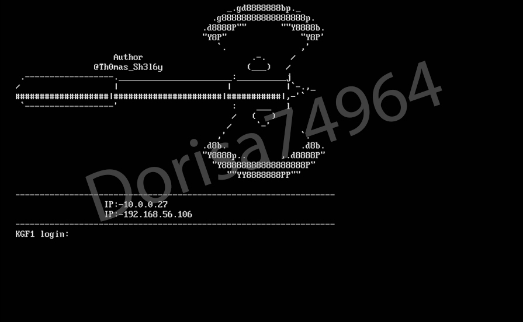
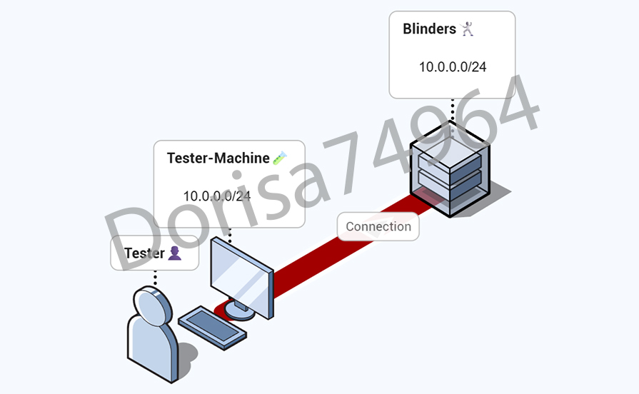
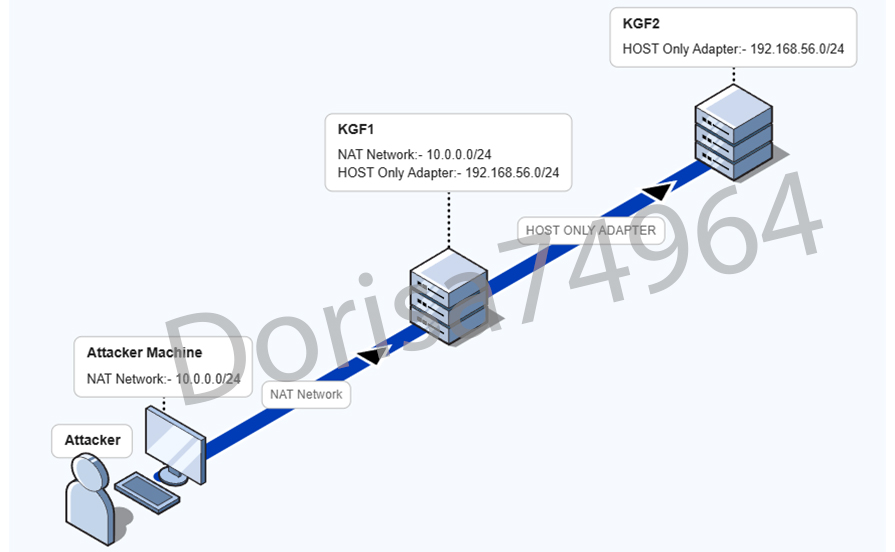

Reports
-
Black Box Pentesting Report
-

Grey Box Pentesting Report -

White Box Pentesting Report
-
Black Box Pentesting Report
Type : Security ReportType : ExternalAn external black-box penetration test was conducted at the request of the customer, simulating real-world threats with no prior access or internal hints. The objective was to determine whether the pentester could gain root access on the target machine through exposed services. The assessment focused on evaluating reconnaissance, enumeration, credential attacks, pivoting via OSINT and credential reuse, and privilege escalation paths. The pentester successfully achieved root access, and the report includes recommendations for stronger passwords, service hardening, and mitigation of public exposure risks to enhance overall external security.

Grey Box Pentesting Report
A Grey Box penetration test was conducted as requested by the customer on one of their sandboxed machines. The assessment focused on identifying misconfigurations and vulnerabilities, with the final task to gain root access on the specified machine. Recommendations for improving security and hardening the system were provided in the final report.

White Box Pentesting Report
A White Box penetration test was conducted at the request of the customer, who provided essential hints and access to an internal network machine. The objective was to determine whether the pentester could reach and gain root access on an additional machine hosted on a separate subnet. Using the provided guidance, the assessment focused on evaluating internal network misconfigurations, privilege escalation paths, and access controls. The pentester successfully achieved root access on both machines, and the report includes recommendations for system hardening, improved administrative controls, and mitigation of misconfigurations to enhance overall internal security.

Machines
-

Blinders -

Demon -

KGF
-
Blinders Machine
A CTF machine focused on real-world reconnaissance and credential-based attacks. This lab shows how publicly available information, weak passwords, and small misconfigurations can be chained together to achieve full system compromise. It encourages structured enumeration, logical thinking, and attention to detail throughout the attack process.
Author : Thomas_ShelbyConcepts : OSINT,Username Generation,Brute Force,Credential Reuse,Service Enumeration,Privilege Escalation
-
Demon Machine
A challenging CTF machine that tests strong enumeration skills and critical thinking at every stage. This lab focuses on discovering hidden virtual hosts, analyzing web services, identifying application misconfigurations, handling protected files, performing password and hash cracking, escaping restricted environments, and leveraging sudo misconfigurations for full system compromise. It encourages a structured workflow, attention to detail, and chaining multiple weaknesses together to achieve root access in a realistic attack scenario.
Author : Thomas_ShelbyConcepts : Advanced Enumeration,Virtual Host Discovery,Web Application Analysis,Password Cracking,NT Hash Analysis,Credential Reuse,Restricted Shell Bypass,ELF Analysis,Sudo Misconfiguration,Privilege Escalation,LotL -
KGF Machine's
A multi-stage CTF machine that focuses on network enumeration, service analysis, and lateral movement. The challenge covers FTP, SNMP, mail protocols, R-services, SSH, and web applications, emphasizing credential discovery, database enumeration, custom password attacks, and privilege escalation. It also introduces pivoting and trust-based authentication, providing a practical workflow for real-world penetration testing scenarios.
Author : Thomas_ShelbyConcepts : Network Enumeration,FTP,SNMP,Mail Protocols,R-Services,MySQL,SSH,Custom Wordlists,Brute Force,Credential Reuse,Privilege Escalation,LotL,Pivoting